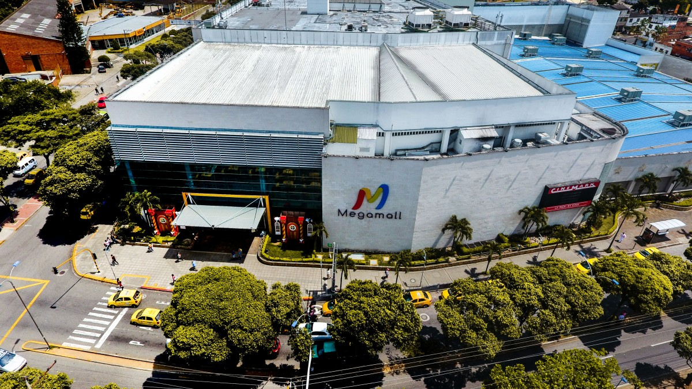

{% load static %}
Centros Comerciales de Bucaramanga
Centros Comerciales del Área Metropolitana de Bucaramanga
Bucaramanga
Centro Comercial Cacique
- Ubicación: Tv. 93 #34-99, Sotomayor, Bucaramanga
- Teléfono: 76917722
- Horario: 8 a.m - 9 p.m
- Descripción: Centro comercial de acero y cristal de 4 niveles con hotel, centro de negocios y unos 1,600 estacionamientos.
Ver más

Centro Comercial Megamall
- Ubicación: Cra. 33 #29-15, Bucaramanga
- Teléfono: (607) 6340020
- Horario: 8 a.m - 10 p.m
- Descripción: Centro comercial con varias tiendas, patio de comidas, cine y zona infantil.
Ver más

La Quinta Centro Comercial
- Ubicación: Cra. 36 #49-45, Bucaramanga
- Teléfono: 320 8352896
- Horario: 8 a.m - 10 p.m
- Descripción: Fusión de elegancia y tranquilidad con marcas exclusivas y oferta gastronómica.
Ver más

Centro Comercial Cuarta Etapa
- Ubicación: Cra. 35A #49-55, Bucaramanga
- Teléfono: 76430812
- Horario: 8:30 a.m - 8:30 p.m
- Descripción: Centro comercial antiguo con restaurantes, tiendas de ropa y artículos del hogar.
Ver más

Floridablanca
Centro Comercial Parque Caracolí
- Ubicación: Cañaveral, entrada autopista
- Teléfono: (607) 6978551
- Horario: 9 a.m - 9 p.m
- Descripción: Centro comercial moderno con tiendas de marca y shows en vivo.
Ver más

Centro Comercial La Florida
- Ubicación: Cl. 31 #26A-19, Cañaveral
- Teléfono: (607) 6187068
- Horario: 9 a.m - 8 p.m
- Descripción: Experiencias en el Mall, terraza 360 y zona de juegos BOX360.
Ver más

Piedecuesta
Delacuesta Centro Comercial
- Ubicación: Refugio, Piedecuesta
- Teléfono: 323 2264151
- Horario: 10 a.m - 8 p.m
- Descripción: Centro comercial diferente con nuevas formas de comprar.
Ver más